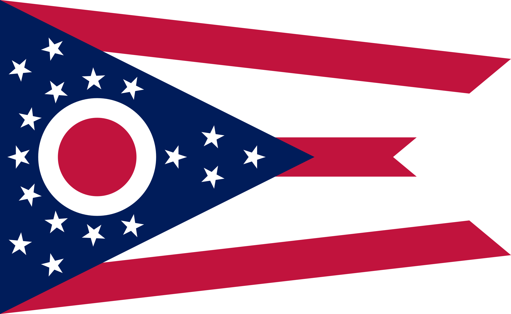
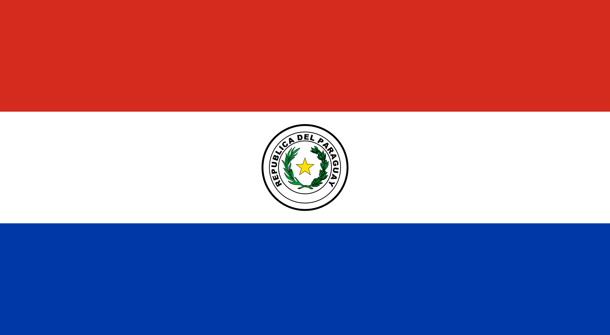
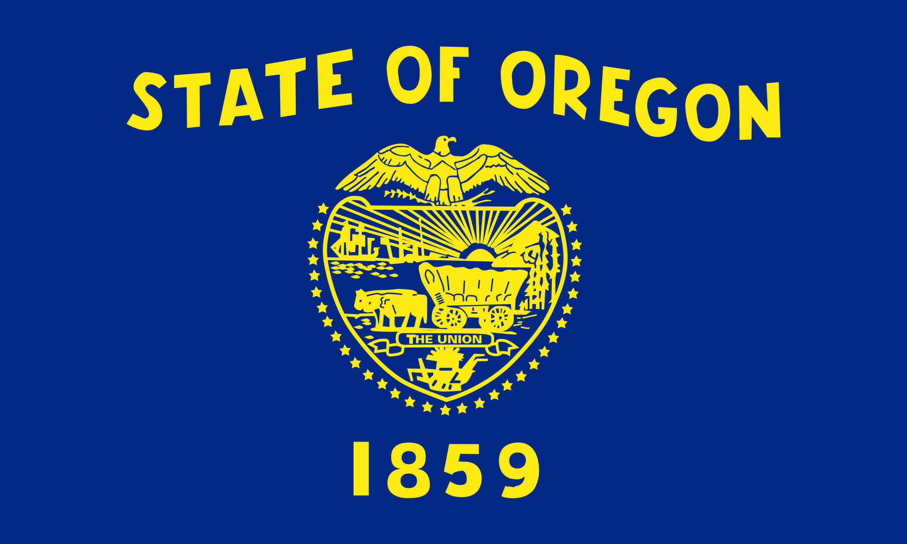
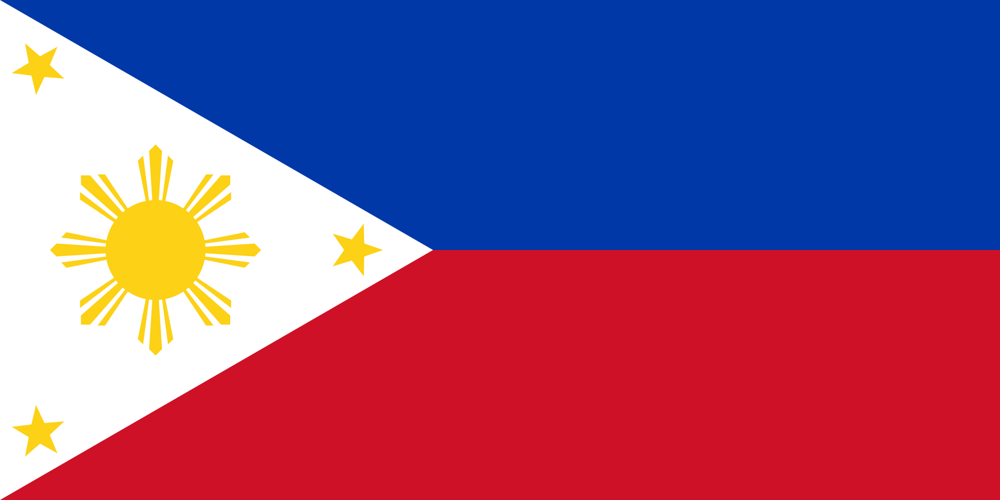
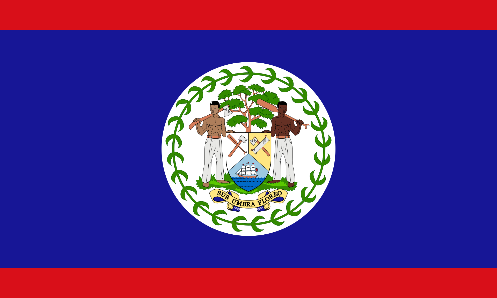
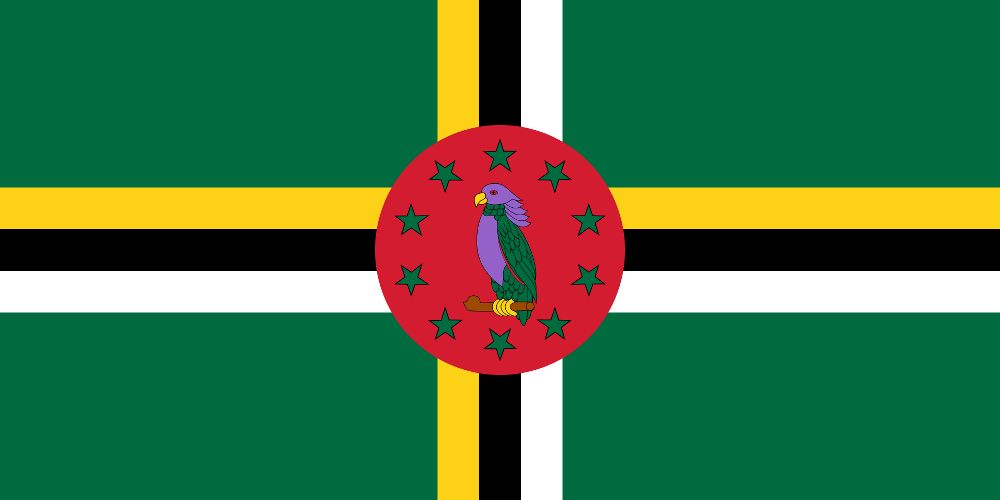
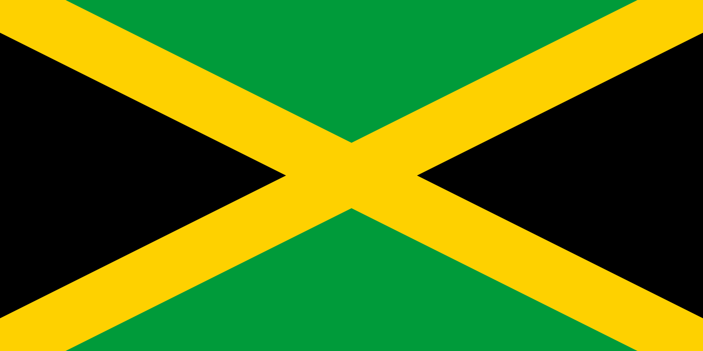

Almost every country in the world uses a rectangular flag, with a 2 by 3 ratio being the most common. There are actually two countries that use a 1 by 1 ratio… that is, a square flag - Switzerland and the Vatican City. Of course, there’s one country that just likes to be completely different altogether. Nepal is the only country in the world whose flag is not rectangular. Its shape can be described as a “double-pennant”, basically two triangles, which is an important part of the flag’s symbolism. It’s thought that originally the triangles were used to symbolise the Himalayas, therefore representing the country’s geographic location. The modern, official interpretation is that the triangles represent Hinduism and Buddhism, the country’s two main religions. The sun and moon depicted on the flag symbolise longevity, with the hope that Nepal continues for as long as the celestial bodies themselves.
Though not a country, there is another flag that is not quadrilateral, and that is the flag of the US state of Ohio. The designer of the flag, John Eisenmann, described the shape as "a triangular forked or swallow-tailed flag corresponding to the shape generally known as a 'cavalry-guidon' or 'broad pennant.'"... whatever that means. The flag was originally designed to represent the Ohio Pan-American Exposition Commission in 1901, but was officially adopted as the State flag the very next year.
Another country flag that is unique from the rest is Paraguay. Their flag has red, white, and blue horizontal bands with the country’s coat of arms in the centre. However, what’s unique about this flag is that the seal changes between the front, ‘obverse’ and the back - the ‘reverse’ side. This is the only national flag that’s like this… but it’s not the only flag in the world.
Again, there is a US state that shares this trait. The flag of Oregon, which breaks pretty much all rules of good flag design, also has two distinct sides. The obverse having the state’s seal, name, and date, while the reverse has a beaver on it.
Now, instead of turning a flag over, what about turning it upside down? Well, that’s exactly what you’re supposed to do to the flag of the Philippines during wartime. The flag’s design is horizontally symmetrical, so turning it upside down merely switches the blue on top with the red on the bottom. The blue stands for peace, truth, and justice; while the red symbolises patriotism and valor. The flag also has white and yellow, of course, bringing the total number of colours up to 4, but I think you’ll agree that even though it has more than the recommended 2 or 3, it’s still a good flag.
One country definitely takes it too far, though. The flag of Belize uses… I don’t even know how many colours. It has a least 4 shades of blue, maybe 3 shades of green… and aside from the color rule, 2 of the other 5 rules have been completely broken. Fun fact: Belize is the only country whose flag has humans on it! So there's that...
Another country that went a little overboard on the colour, Dominica, has seven different colours - green, yellow, black, white, red, purple, and brown. Dominica is actually the only country in the world whose flag contains the colour purple… unless we count the tiny amount of purple on the flag of Nicuargua whose coat of arms has a rainbow on it… which I don’t.
But by far the best colour-related flag fact is about the flag of Jamaica. Jamaica is the only country in the world whose flag does not have any of the colours red, white, or blue. Instead, it has green and black with a gold solitaire. The green represents the land and the lush vegetation of the island; the gold represents the wealth of the country as well as a golden sunshine; and the black represents the strength and creativity of its people, used to overcome difficulties. If you’re now thinking “wait, there’s another country - Mauritania”... this is no longer the case. The country changed its flag recently. Originally green with a gold star and crescent, an addition of two red bands along the top and bottom of the flag was made in 2017, leaving just Jamaica without red, white, or blue. So the Jamaica flag is unique… although some flags are anything but.